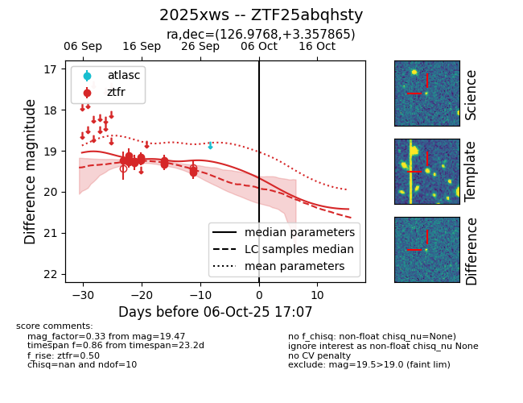
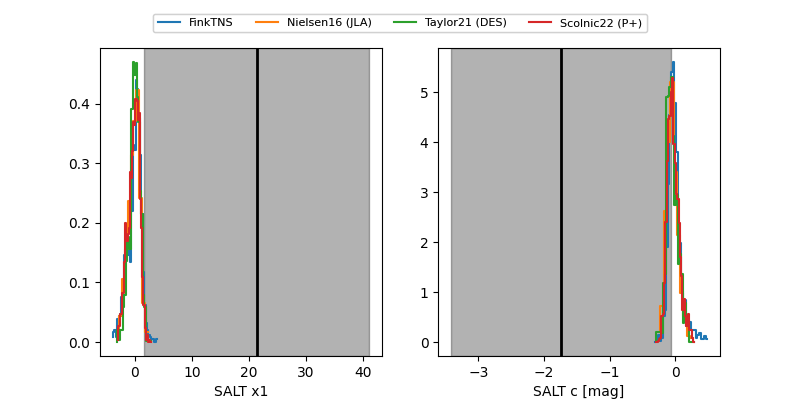

FINK: ZTF25abqhsty
Lasair: ZTF25abqhsty
ALeRCE: ZTF25abqhsty
TNS: 2025xws
YSE: 2025xws
ZTF25abqhsty (ztf,fink)
2025xws (tns,yse)
equatorial (ra, dec) = (126.9768,+3.35787)
galactic (l, b) = (221.2903,+22.93821)


last ztfr=19.47
13 ztfr detections